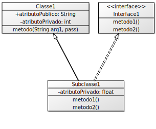

Qual exercício você considerou o mais difícil de ser resolvido e quais foram as dificuldades encontradas?.
Desenhe um diagrama mostrando a hierarquia de classes do seu programa para o exercício 1, seguindo o exemplo abaixo. Nesse exemplo, a Subclasse1 herda de Classe1 e implementa a Interface 1.

De que forma os atributos de classe foram usados no exercício 1, e porque essa seria uma boa escolha?
Desenhe o mesmo tipo de diagrama da questão 2 para o exercício 2.
Qual foi a abordagem usada para inicializar o tabuleiro do exercício 2?